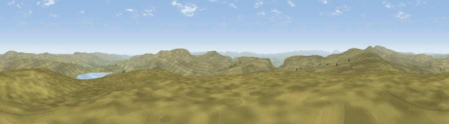

Meldon Hill
#5155 in England · top 9% of its area beats it · —Where it is
The exact computed spot (NY 77175 29075). Click the marker for map links.
The view, rendered

A 360° render of this exact spot computed from the terrain model, tree cover and land cover — summer colours, afternoon light, calibrated against photographs of famous viewpoints. Real trees, hedges and buildings will differ in detail.
The panorama
Grey silhouette: terrain skyline in each direction (720 bearings, Earth curvature and refraction included). Dashed green: skyline with trees (+15 m) and buildings (+8 m) as obstacles. Blue strip: how far the ground is visible on each bearing.
Where the view opens
Wedge length = distance to the farthest visible ground on that bearing (vegetation-aware). Rings at 10, 25 and 50 km.
What fills the view
98% grassland · 1% water ·
Angular shares of the visible panorama (visual magnitude), not map area. Landscape diversity 0.05 (0–1 Shannon).
Key numbers
More beautiful places nearby
The staircase of upgrades: each row has a higher view potential than everything closer. Driving times are estimates from straight-line distance, calibrated against real road routing — check an actual route before setting out.
| Place | Direction | Drive | Score |
|---|---|---|---|
| Knock Fell | WNW · 5 km | ~12 min | 71.6 |
| Viewpoint near Dufton | W · 5 km | ~12 min | 72.9 |
| Mickle Fell | SE · 6 km | ~12 min | 75.8 |
| Great Dun Fell | WNW · 7 km | ~14 min | 77.8 |
| Little Dun Fell | WNW · 8 km | ~16 min | 78.4 |
| Cross Fell | WNW · 10 km | ~19 min | 78.7 |
| Viewpoint near Plumpton | WNW · 27 km | ~43 min | 78.9 |
| Viewpoint near Watermillock | WSW · 32 km | ~49 min | 82.6 |
54.65625, -2.35531 · source: dobih hill · position refined by local search. Computed location — check access rights before visiting.